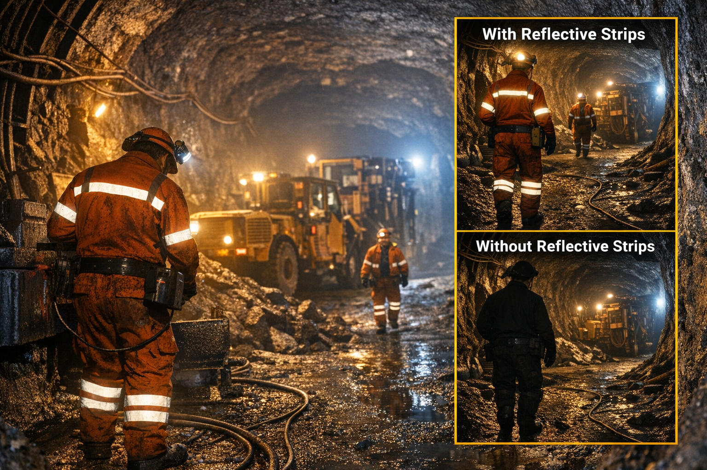

Enhancing visibility and safety in underground environments
Далд уурхайн орчинд харагдах байдлыг сайжруулж, аюулгүй байдлыг хангана

Reflective strips are crucial for underground miners, making them visible to equipment operators and coworkers in low-light conditions.
Without reflective clothing, workers can easily blend into the dark environment, increasing the risk of accidents.
Далд уурхайн ажилчдын хувьд гэрэл ойлгогч тууз нь гэрэлтүүлэг багатай орчинд тоног төхөөрөмжийн оператор болон хамтран ажиллагсдад харагдах байдлыг хангах чухал хэрэгсэл юм.
Гэрэл ойлгогчгүй хувцас өмссөн ажилчид харанхуй орчинд анзаарагдахгүй байж болзошгүй тул ослын эрсдэл нэмэгддэг.
Reflects light from headlamps and machinery.
Толгойн гэрэл, тоног төхөөрөмжөөс тусах гэрлийг ойлгож харагдах байдлыг сайжруулна.
Resistant to dust, moisture, and abrasion.
Тоос, чийг, элэгдэлд тэсвэртэй.
Meets international visibility standards.
Олон улсын харагдах байдлын стандартыг хангасан.
Can be attached to jackets, pants, and helmets.
Хувцас, өмд, дуулганд суурилуулах, тогтооход хялбар.
1. What is the main purpose of reflective strips?
To improve visibility in low light
To keep miners warm
To reduce noise
2. Why are reflective strips important in underground mining?
They help identify workers and prevent accidents
They make clothes waterproof
They improve air quality
3. Where can reflective strips be attached?
Jackets, pants, helmets
Only boots
Only gloves